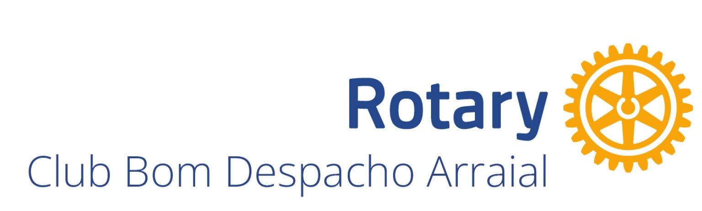
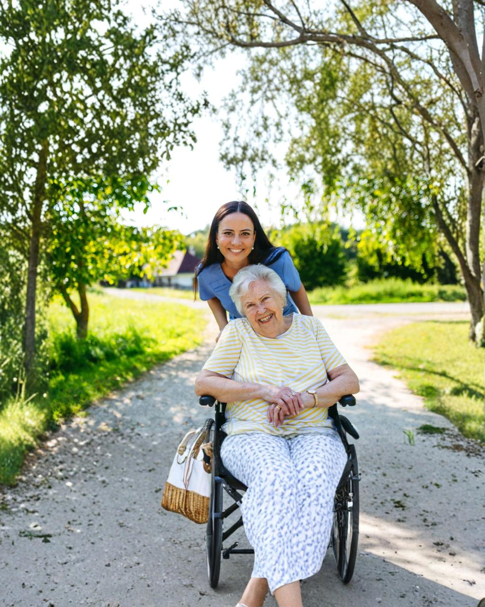

O Rotary Club Bom Despacho Arraial convida a sociedade e a classe empresarial a unirem-se a este projeto transformador que devolve mobilidade e dignidade à nossa cidade.
Saiba Como ParticiparO Rotary é uma rede global formada por mais de 1,2 milhão de líderes, amigos, vizinhos e solucionadores de problemas que veem um mundo onde as pessoas se unem e entram em ação para causar mudanças duradouras em si mesmas, nas suas comunidades e no mundo todo.
Em Bom Despacho, o nosso clube pauta-se pela ética, transparência e pelo lema "CRIE IMPACTO DURADOURO". Desenvolvemos projetos de alto impacto social, conectando o setor produtivo às necessidades reais da nossa comunidade.
Conduzimos há vários anos o Banco de Materiais Ortopédicos. Um projeto social contínuo que disponibiliza, de forma totalmente gratuita, cadeiras de rodas, cadeiras de banho, muletas e camas hospitalares.
Centenas de famílias já foram beneficiadas. Contudo, com o crescimento da comunidade, a procura por estes equipamentos aumentou expressivamente, tornando urgente a ampliação do nosso acervo.
O objetivo desta campanha é angariar recursos para adquirir 40 cadeiras de rodas, 10 cadeiras de banho e 3 camas hospitalares, zerando as filas de espera na cidade.

Seja através da responsabilidade social da sua empresa ou de uma doação individual, a sua atitude coloca a esperança em movimento.
Posicione a sua marca como Parceira Oficial do Rotary, associando o seu negócio a uma causa nobre e à responsabilidade social na prática.
Faça a sua doação de forma rápida e segura diretamente para a conta oficial do projeto, doe equipamentos ortopédicos ou seja voluntário.